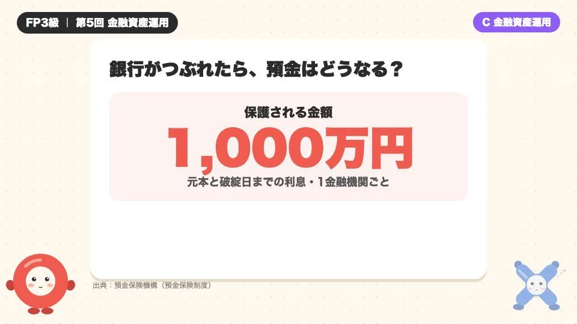
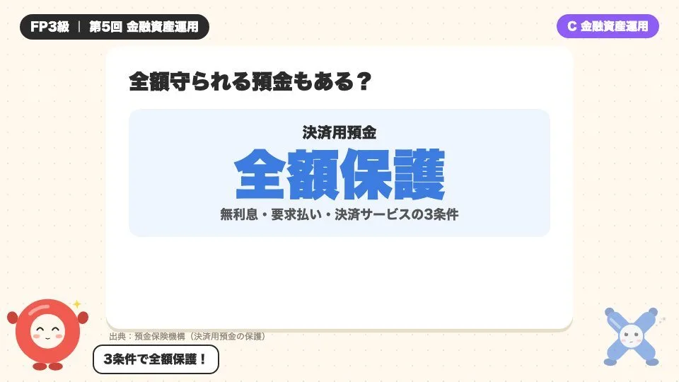
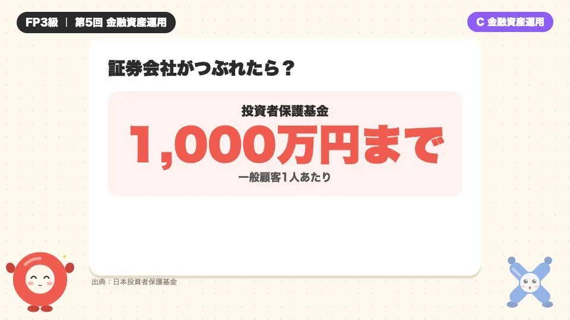
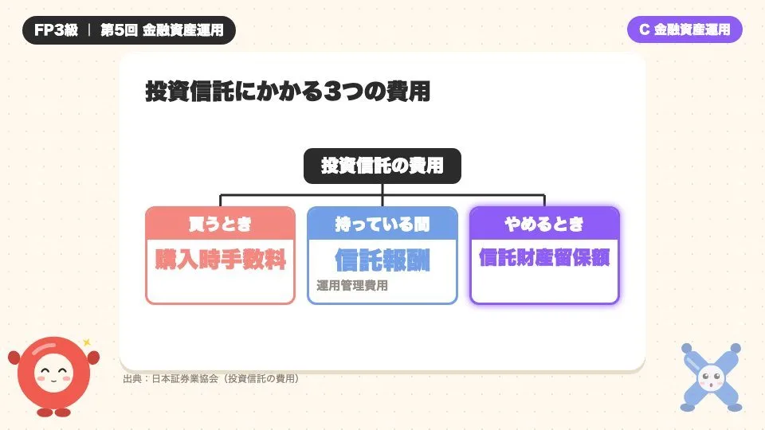
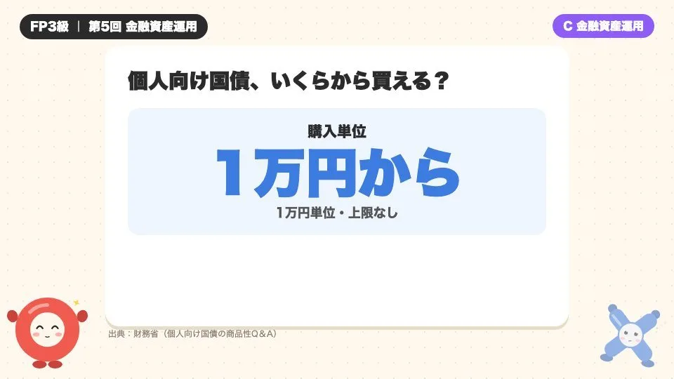
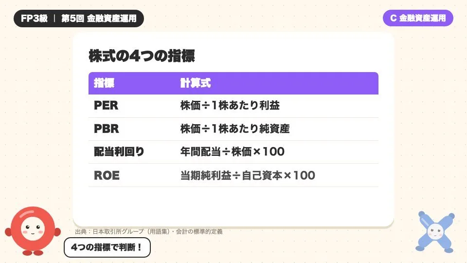
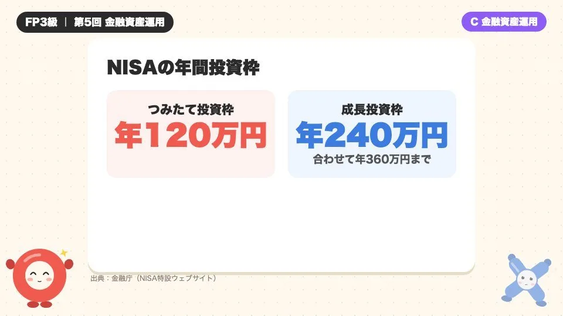
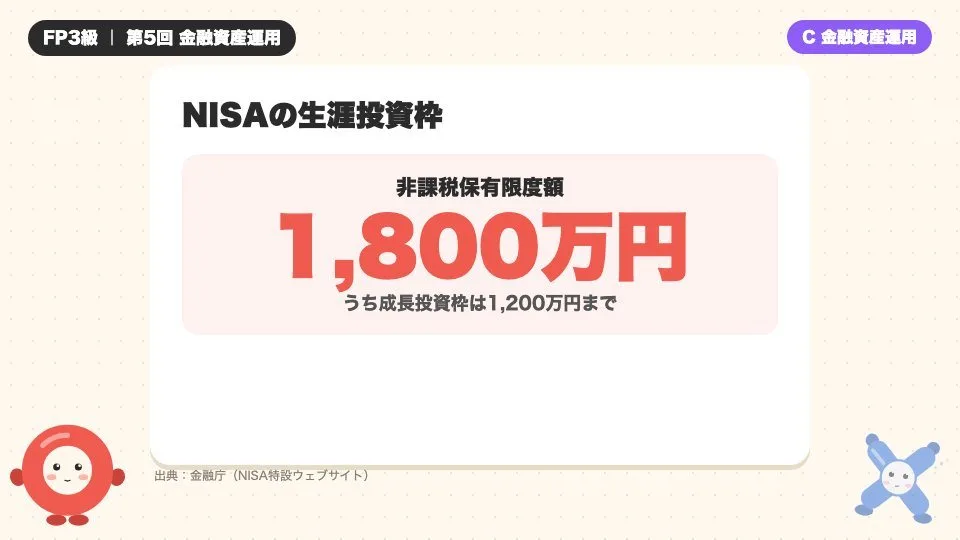
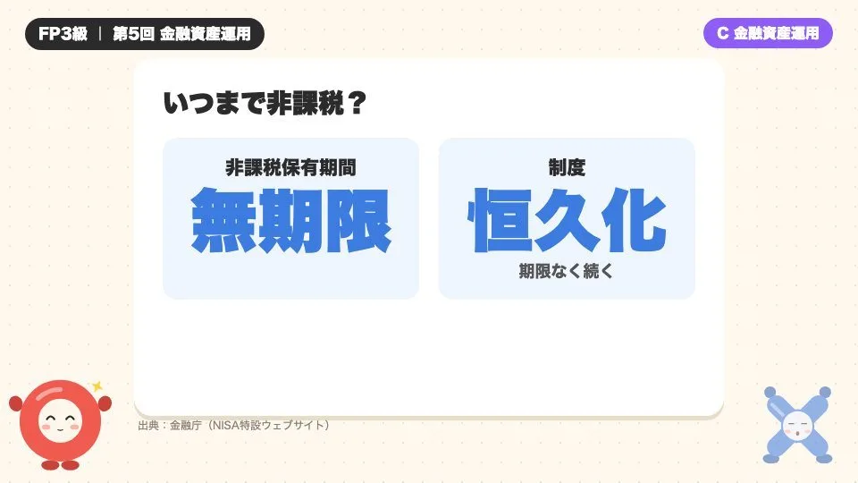
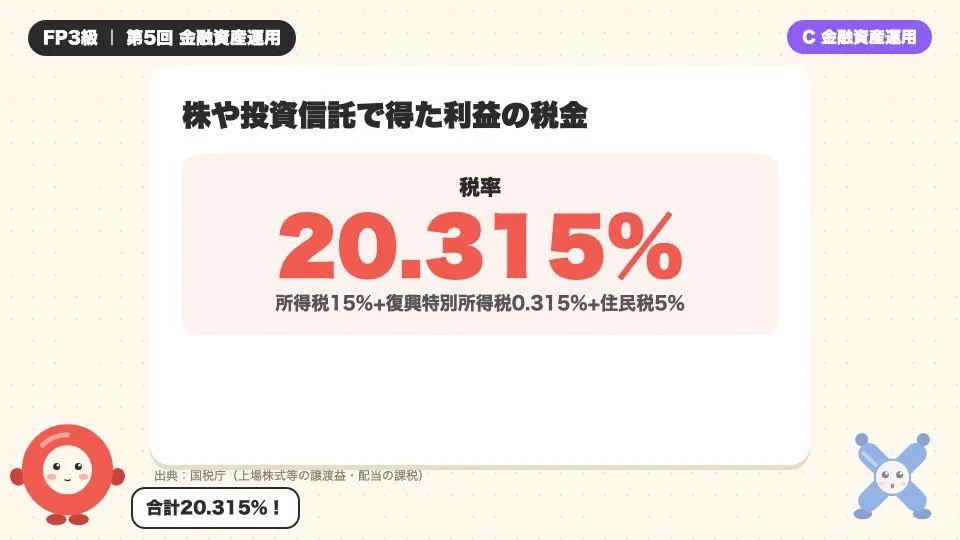

FP3級の金融資産運用では、預金保険・日本投資者保護基金といった投資のセーフティネットと、NISAの新制度がよく出題されます。銀行が破綻しても、預金は1つの金融機関につき元本1,000万円と利息分まで預金保険で守られ、証券会社が破綻したときは日本投資者保護基金が1人あたり1,000万円まで補償します。新NISAは、つみたて投資枠と成長投資枠を合わせて年360万円、生涯で1,800万円まで非課税で投資でき、非課税期間は無期限で制度も恒久化されています。この記事の数字は、11月21日時点で確認したものです。
▶ この記事の内容を動画で見る（マルバツ資格塾）01銀行や証券会社が破綻したときの備え（預金保険と日本投資者保護基金）

銀行などの金融機関が破綻しても、預金は預金保険制度で守られます。保護されるのは、1つの金融機関につき、元本1,000万円と破綻日までの利息分までです。

無利息・いつでも引き出せる・決済に使える、という3つの条件を満たす「決済用預金」は、金額にかかわらず全額が保護されます。

証券会社が破綻したときは、日本投資者保護基金が、一般顧客1人あたり1,000万円まで補償します。
02投資信託の3つの費用と、個人向け国債のしくみ

投資信託には、買うときにかかる購入時手数料、持っている間ずっとかかる信託報酬（運用管理費用）、やめるときにかかる信託財産留保額の、3つの費用があります。この3つの費用を比べて選ぶことが大切です。

個人向け国債は、1万円から1万円単位で購入でき、購入金額の上限はありません。変動10年・固定5年・固定3年の3タイプがあり、どのタイプも金利の下限が年0.05%と決まっていて、市場の金利がどれだけ下がっても0.05%を割らず、元本割れもしません。債券には信用力を表す格付けもあり、投資適格の最低ラインはBBB格相当です。
ポイント個人向け国債は、3タイプとも金利の下限が年0.05%と決まっているため、元本割れしない点が特徴です。
03株式を選ぶときの4つの指標と売買単位

株式を選ぶときに見る代表的な指標は4つあります。
| 指標 | 計算式 | 分かること |
|---|---|---|
| PER（株価収益率） | 株価÷1株あたり利益 | 株価が割安かどうか |
| PBR（株価純資産倍率） | 株価÷1株あたり純資産 | 株価が割安かどうか |
| 配当利回り | 年間配当÷株価×100 | 株価に対する配当の割合 |
| ROE（自己資本利益率） | 当期純利益÷自己資本×100 | 会社の稼ぐ力 |
株式の売買単位は、2018年10月に全国の証券取引所で100株に統一されました。 現在は、どの銘柄も100株単位で売買します。
04NISAの新制度、年間投資枠と生涯投資枠、非課税は無期限

新NISAの年間投資枠は、投資信託を定期的に買うつみたて投資枠が年120万円、株式なども買える成長投資枠が年240万円で、合わせて年360万円まで投資できます。

生涯で投資できる非課税保有限度額は1,800万円で、そのうち成長投資枠は1,200万円までです。

非課税で保有できる期間は無期限で、NISA制度そのものも恒久化されています。
05NISA以外の口座で得た利益にかかる税金

NISA口座ではなく、一般口座や特定口座で得た株式や投資信託の利益には税金がかかります。税率は20.315%で、内訳は所得税15%、復興特別所得税0.315%、住民税5%です。
06よくある質問
銀行が破綻したら、預金はいくらまで保護される？
1つの金融機関につき、元本1,000万円と破綻日までの利息分までが預金保険で保護されます。無利息・要求払い・決済に使えるという3条件を満たす決済用預金は、全額保護されます。
証券会社が破綻したら、投資したお金はどうなる？
日本投資者保護基金が、一般顧客1人あたり1,000万円まで補償します。
NISAの年間投資枠と生涯投資枠はいくら？
年間投資枠はつみたて投資枠120万円と成長投資枠240万円を合わせて360万円まで、生涯の非課税保有限度額は1,800万円で、うち成長投資枠は1,200万円までです。
NISA以外の口座で得た利益の税率は？
20.315%です。内訳は所得税15%、復興特別所得税0.315%、住民税5%です。
07まとめ
結論銀行や証券会社が破綻しても、預金保険と日本投資者保護基金が一定額まで守ってくれます。新NISAは年360万円・生涯1,800万円まで非課税で、非課税期間は無期限です。
- 預金保険は1金融機関につき元本1,000万円と利息分まで、決済用預金は全額保護
- 証券会社破綻時は日本投資者保護基金が1人あたり1,000万円まで補償
- 投資信託の費用は購入時手数料・信託報酬・信託財産留保額の3つ
- 個人向け国債は1万円から購入でき、金利の下限は年0.05%
- 株式の指標はPER・PBR・配当利回り・ROEの4つ、売買単位は100株
- 新NISAは年間360万円・生涯1,800万円まで非課税、非課税期間は無期限
- NISA以外の口座で得た利益の税率は20.315%
FP3級の試験の全体像はFP3級の試験のしくみ・費用・日程まとめ、勉強の進め方はFP3級の勉強法、6分野の順番とCBT当日の持ち物で確認できます。